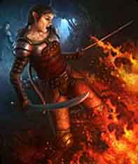
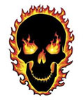
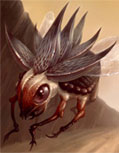

INCANTESIMI GENERALI
1°
LIVELLO DI POTERE
|
Battlefate |
Charm |
|
|
| Sphere : |
Charm |
| Range : |
18
metri |
| Components : |
V, S,
M |
| Duration : |
4
round + 1 round/2 livelli |
| Casting Time : |
4 |
| Area of Effect : |
Una
creatura |
| Saving Throw : |
None |
Quando il chierico lancia questa magia invoca il potere delle propria divinità affinché renda
la creatura beneficiaria più forte in battaglia. Per tutta la durata
dell'incantesimo, che è pari a 4 round + 1 round ogni due livelli di lancio
della magia (5 round al 1° e 2° livello, 6 round al 3° e 4° livello, 7 round al
5° e 6° livello, e così via...) fino ad un massimo di 10 round all'11° livello
di lancio, chi riceve gli effetti di questa magia dovrà tirare 1d6 nella fase
delle intenzioni per determinare il beneficio ricevuto. Il tiro va ripetuto
all'inizio di ogni nuovo round di combattimento. Per determinare il beneficio si
consulti, dunque, la seguente tabella:
|
TIRO |
BENEFICIO |
|
1 |
Nessun beneficio sarà
applicato nel round |
|
2 |
Difesa Migliorata, si applichi il bonus alla Classe Armatura |
|
3 |
Attacco Migliorato, si applichi il bonus ai Tiri per Colpire |
|
4 |
Danno Potenziato, si applichi il bonus ai Danni |
|
5 |
Resistenza Maggiorata, si applichi il bonus ai Tiri Salvezza |
|
6 |
Il beneficiario può
scegliere che beneficio applicare nel round |
Si noti che il bonus previsto per i danni sarà applicato solo ai danni
principali prodotti dagli attacchi effettuati dalla creatura non applicandosi,
ad esempio, ai danni prodotti da poteri speciali, ai danni supplementari
prodotti con arti di combattimento od ai danni prodotti tramite il lancio delle
magie.
L'ammontare del bonus applicato al beneficiario dipende dal livello di lancio
della magia. In particolare sarà applicato un bonus di +1 se la magia è
utilizzata dal 1° al 4° livello di lancio ed un bonus di +2 se la magia è
utilizzata a partire dal 5° livello di lancio. Si osservi che questi bonus, come
del resto ogni altro bonus di origine divina, non si cumulano con bonus, sempre
di origine divina, che incidano sul medesimo tiro od effetto. Il componente materiale di questo
incantesimo è una moneta di metallo con inciso il simbolo della divinità dal
costo di 3 monete d'oro e dal peso pari ad 1/10 di libbra che si consuma al
lancio dell'incantesimo.
|
Call Upon Faith |
Summoning |
|
|
| Sphere : |
Summoning |
| Range : |
0 |
| Components : |
V, S, M |
| Duration : |
Speciale |
| Casting Time : |
1 |
| Area of Effect : |
The Caster |
| Saving Throw : |
None |
Prima di iniziare
una qualsiasi difficile azione il chierico può invocare l'aiuto della propria
divinità. In questo modo il chierico otterrà un beneficio corrispondente ad un
bonus +3 (+15%) che potrà applicare ad un singolo tiro necessario ad effettuare
il compimento dell'azione. Questo beneficio può essere utilizzato solo per il
compimento di un'azione che inizi e si concluda nel round immediatamente
successivo a quello del lancio della presente magia. Si noti che questo
incantesimo non può essere utilizzato nel caso in cui il chierico desideri
effettuare un'azione consistente nell'invocare un intervento divino. Il
componente materiale di questo incantesimo è il simbolo sacro del chierico.
|
Cause Fear |
Charm |
|
|
| Sphere : |
Charm |
| Range : |
9
metri |
| Components : |
V, S |
| Duration : |
1d3
round |
| Casting Time : |
3 |
| Area of Effect : |
Una
creatura |
| Saving Throw : |
Negates |
Quando il chierico lancia questa magia la vittima ha diritto a superare un tiro
salvezza su coraggio. Se il tiro
salvezza fallisce la vittima sarà terrorizzata dal chierico e non compierà
alcuna altra azione se non fuggire alla maggiore distanza possibile dallo stesso
per l'intera durata dell'incantesimo. La vittima, in ogni caso, fuggirà
utilizzando le sue comuni modalità di movimento non ricorrendo all'utilizzo di
metodi magici di teletrasporto o di oggetti magici (si pensi ad una pozione
gassosa od una pozione del ritorno). Se impossibilitata a scappare la vittima
resterà ferma e si limiterà a difendersi passivamente senza ottenere alcuna
penalità ma non potendo utilizzare poteri od abilità speciali, punti o manovre
di combattimento.
|
Combine |
Summoning |
|
|
| Sphere : |
All |
| Range : |
Tocco |
| Components : |
V, S |
| Duration : |
Speciale |
| Casting Time : |
1
round |
| Area of Effect : |
Speciale |
| Saving Throw : |
None |
Questo incantesimo cumulativo può essere utilizzato da due a quattro chierici.
La magia, per precisione, viene utilizzata sempre sul chierico del livello di
esperienza più lato (in caso di chierici di pari livello su uno a loro scelta)
da quelli di livello più basso. Costoro lanciano la magia toccando il chierico
che deve ottenere gli effetti benefici. Quest'ultimo quindi potrà considerarsi,
fino a che perdura questa magia, di un livello di esperienza superiore per ogni
chierico che ha utilizzato su di lui questo incantesimo al solo fine di
effettuare un'azione di scacciare o controllare i non morti e di determinare il
livello di lancio dei propri incantesimi. Si noti che, nonostante il chierico
possa lanciare magie ad un livello di lancio superiore, questo incantesimo non
permette al chierico di accedere a magie diverse da quelle alle quali aveva
regolarmente accesso né di ottenere punti preghiera supplementari. Per
funzionare la magia richiede che il chierico beneficiario non si sposti dalla
posizione occupata al momento del suo lancio nonché il mantenimento della
concentrazione da parte dei chierici che l'hanno lanciata i quali, se attaccati
durante il mantenimento della concentrazione, saranno considerati (sempre che
non decidano di interromperla) come se fossero storditi [stunned]. Se, per
qualsiasi motivo, viene meno la concentrazione del chierico che ha lanciato
questo incantesimo od il suo contatto fisico con il beneficiario (ad es. il
chierico che ha lanciato la magia si sposta o cade al suolo knockdown) la magia
terminerà immediatamente solo in relazione al chierico che ha interrotto la
concentrazione. Se, invece, è il chierico che beneficia di questa magia a
spostarsi dalla posizione originariamente occupata (od a cadere al suolo
knockdown) costui farà venir meno tutte le magie di combine che gli erano state
lanciate. Si noti, infine, che se è solo il chierico beneficiario a perdere la
concentrazione nel lancio delle sue magie ciò non influenzerà gli incantesimi di
combine che gli erano stati lanciati addosso.
|
Detect Magic |
Divination |
|
|
| Sphere : |
Divination |
| Range : |
0 |
| Components : |
V, S, M |
| Duration : |
1 round |
| Casting Time : |
1 round |
| Area of Effect : |
The Caster |
| Saving Throw : |
None |
Quando il chierico
lancia questo incantesimo riesce a percepire la luminosità delle aure magiche
presenti entro 30 metri di distanza dallo stesso. Per poter percepire la
luminosità dell'aura, però, il chierico deve poter vedere, anche se
parzialmente, l'oggetto o la zona in cui l'aura è in effetto. Un chierico non
potrà vedere, ad es. l'aura di un oggetto magico che si trova all'interno di uno
zaino o sepolto da macerie. In base all'intensità dell'aura, inoltre, il
chierico potrà determinare la potenza dell'incantamento. Se si tratta di effetti
magici dovuti ad incantesimi, quindi, il chierico potrà determinare il livello
di potere della magia di cui analizza gli effetti. Se, invece, si tratta di
oggetti magici costui potrà determinarne la potenza dell'incantamento come
indicata nella seguente scala:
|
POTENZA
DELL'INCANTAMENTO |
PUNTI ESPERIENZA |
|
Least Minor
Enchantment |
75
punti esperienza |
|
Lesser Minor
Enchantment |
100
punti esperienza |
|
Minor Enchantment |
150
punti esperienza |
|
Superior Minor
Enchantment |
250
punti esperienza |
|
Greater Minor
Enchantment |
375
punti esperienza |
|
Lesser Enchantment
|
500
punti esperienza |
|
Superior Enchantment |
1000
punti esperienza |
|
Greater Enchantment |
1500
punti esperienza |
Il componente
materiale di questo incantesimo è il simbolo sacro del chierico.
|
Malison
|
Necromancy |
| Sphere : |
All |
| Range : |
0 |
| Components : |
V, S, M |
| Duration : |
6 rounds |
| Casting Time
: |
1 round |
| Area of
Effect : |
Speciale |
| Saving Throw
: |
Negates |
Attraverso questa
magia il chierico invoca la maledizione della propria divinità sui suoi
avversari. La magia
influenzerà una creatura per ogni livello di lancio della stessa
(fino ad un massimo di 10 creature al 10° livello di lancio) che
si trovino ad una distanza massima di 30 metri dal chierico al momento del
lancio dell'incantesimo. Le vittime hanno diritto ad un tiro salvezza su magia per evitare gli effetti della magia. Chi si trova sotto gli effetti di questo incantesimo
riceve un malus di -1 a tutti i tiri per colpire e di -1 ai tiri salvezza contro
paura. Si noti che questi malus, come del resto ogni altro malus di origine divina, non si cumulano con
malus, sempre di origine divina, che incidano sul medesimo tiro od effetto. Il
componente materiale di questo incantesimo è una boccetta d'acqua santa che si
consuma al momento del lancio.
|
Torch of
Everburning |
Enchatment |
|
Sphere : |
Elemental Fire |
|
Range : |
Tocco |
|
Components : |
V, S |
|
Duration : |
Speciale |
|
Casting Time : |
1 turn |
|
Area of Effect : |
Una torcia |
|
Saving Throw : |
None |
Utilizzando questo incantesimo il chierico può incantare una comune torcia
permettendole di bruciare potenzialmente a tempo indeterminato. Dopo il lancio
dell'incantesimo, infatti, la torcia si prenderà fuoco e continuerà a bruciare
senza, però, mai consumarsi. La magia può, ovviamente, essere dissolta
magicamente. Inoltre, la torcia si spegnerà e la magia, conseguentemente
terminerà, qualora la stessa sia immersa nell'acqua od altro liquido similare
oppure sia completamente bagnata in altro modo. La torcia, infatti, continuerà a
bruciare anche qualora la stessa cada al suolo o qualora sia presente vento
molto forte. Ovviamente, in tali circostanze la luce irradiata dalla torcia sarà
ridotta espandendosi per soli 3 metri. Il chierico può utilizzare questo
incantesimo su più torce ma lo stesso non potrà mantenerlo attivo su un
ammontare di torce superiore ad una torcia ogni due livelli di esperienza
raggiunti (arrotondati per eccesso: 1 torcia al 1° e 2° livello, 2 torce al 3° e
4° livello, e così via...). In ogni momento, però, il chierico potrà far
terminare la magia (con un'azione complessa che si considera assimilabile al
lancio di un incantesimo, che richiede un intero round ed il mantenimento della
concentrazione) su una qualsiasi delle torce che ha precedentemente incantato
(indipendentemente dalla distanza e dalla locazione ove tale torcia si trova).
Quando la magia, per qualsiasi motivo, termina la torcia si sgretolerà
immediatamente in cenere.
2°
LIVELLO DI POTERE
|
Chaos Ward |
Abjuration |
| Sphere : |
Chaos |
| Range : |
Tocco |
| Components : |
V, S, M |
| Duration : |
3 round +
1 round/livello |
| Casting Time
: |
5 |
| Area of
Effect : |
Una Creatura |
| Saving Throw
: |
None |
Chi riceve questo
incantesimo viene circondato da un'invisibile aura di protezione sacra. La
protezione difende la creatura facendole ottenere un bonus divino di -1 alla
propria classe armatura contro ogni attacco in corpo a corpo. La magia, inoltre,
difende in modo più incisivo dagli attacchi a distanza donando al beneficiario
un bonus divino di -2 alla propria classe armatura contro tali tipi di attacchi
(il bonus si applicherà anche contro i tiri per colpire di attacchi a distanza
effettuati tramite l'uso di incantesimi o poteri speciali). Oltre a tale
beneficio, la magia ha una certa possibilità di influenzare gli incantesimi che,
non richiedendo alcun tiro per colpire, sono direttamente centrati sul soggetto
protetto. Questa protezione non sarà quindi applicata alle magie che richiedano
un tiro per colpire e su quelle ad area ma potrà essere applicata agli effetti
delle magie che, anche parzialmente, sono indirizzate contro il soggetto
protetto. Si pensi ad una magia di Magic Missile della quale potranno essere
influenzati, ovviamente, solo i dardi lanciati contro il soggetto protetto. In
ogni caso, indipendentemente dal numero di oggetti scagliati dalla magia, sarà
richiesto un unico tiro che influenzerà l'intero effetto prodotto in quel round
dalla magia sul soggetto protetto. Orbene per determinare l'effetto sulla magia
si tiri 1d100 e si aggiunga al risultato il livello di lancio di questa magia,
poi si consulti la seguente tabella:
|
TIRO |
EFFETTO |
|
0-80 |
Nessun beneficio |
|
81-90 |
Gli effetti della magia sul soggetto protetto sono automaticamente
annullati |
|
91-99 |
Gli effetti della magia sono direzionati su un altro soggetto scelto
casualmente tra tutte le creature presenti entro 30 metri di distanza
(la distanza tra il soggetto originario e quello selezionato dovrà
essere sommata a quella originariamente utilizzata per determinare se la
magia superi il raggio di azione previsto). |
|
100+ |
Gli effetti della magia sono direzionati sul soggetto che ha lanciato la
magia (la distanza necessaria per tornare sul soggetto che ha
originariamente lanciato la magia dovrà essere sommata a quella
originariamente utilizzata per determinare se la magia superi il raggio
di azione previsto). |
Il
componente materiale di questo incantesimo è una carta da gioco con incisioni in
oro ed argento dal valore di 5 g.p. e dal peso di 0,2 libbre che si consuma al
lancio della magia.
|
Fire
Tentacle |
Evocation |
|
|
|
Sphere : |
Combat |
|
Range : |
15 metri |
|
Components : |
V, S, M |
|
Duration : |
1
round per livello |
|
Casting Time : |
1
round |
|
Area of Effect : |
Speciale |
|
Saving Throw : |
Speciale |
Lanciando questa magia il chierico fa apparire un lungo tentacolo interamente
costituito di materiale elementale proveniente dal piano del fuoco. Il
tentacolo elementale non potrà spostarsi dal luogo ove è stato creato (occuperà
quella posizione come se fosse una creatura inamovibile) ma potrà essere
utilizzato dal chierico per attaccare per tutta la durata della magia. Per
comandare il tentacolo al fine di farlo attaccare il chierico deve concentrarsi
ed effettuare un'azione complessa assimilabile al lancio di un incantesimo
avente fattore iniziativa pari a +5. Quindi l'attacco del tentacolo avverrà
simultaneamente al compimento di tale azione. Si noti che il chierico deve
trovarsi ad una distanza massima pari a 15 metri dal tentacolo per poterlo
comandare efficacemente. Date le sue dimensioni, il tentacolo può attaccare con
un attacco in corpo a corpo una qualsiasi creatura si trovi entro 6 metri di
distanza dallo stesso (2 esagoni). Si noti che il tentacolo muovendosi solo al
comando del chierico non effettuerà in alcun caso attacchi di opportunità.
Quando il chierico non impartisce l'ordine di attacco al tentacolo, lo stesso
resterà fermo in attesa di ordini. Per effettuare il suo attacco, il tentacolo
utilizzerà la Thac0 base del chierico. Il tentacolo può essere distrutto
fisicamente ma in ogni caso è totalmente immune ai danni non magici.
Il tentacolo, che appare come un sottile turbine di fiamme vorticose, ha una
classe armatura pari ad AC 7, punti ferita pari a 9 + 1 per livello di lancio
della magia. Il suo attacco provoca 1d8+4 danni da fuoco magico. Nel round
immediatamente successivo all'attacco andato a segno, inoltre, qualora la
vittima non impieghi tutto il round a spegnere le fiamme residue sul suo corpo
la stessa subirà ulteriori 1d6 danni da fuoco.
Alla fine di ogni round di durata della magia, con una free action ad
attivezione mentale, il chierico potrà far sparire il tentacolo sempre che si
trovi ad una distanza massima pari a 15 metri dallo stesso. Il componente
materiale di questo incantesimo è il simbolo sacro del chierico ed una gemma di
tipo ametrino dal valore di 10 monete d'oro e dal peso di 1/10 di libbra che si
consuma al lancio della magia.
|
Fire Trap |
Evocation
|
|
|
| Sphere : |
Wards |
| Range : |
Tocco |
| Components : |
V, S,
M |
| Duration : |
Speciale |
| Casting Time : |
1
turn |
| Area of Effect : |
Speciale |
| Saving Throw : |
None |
|
 |
Quando il
chierico effettua questo piccolo rituale costui crea una trappola magica
in una sezione di suolo solido delle dimensioni di un esagono (3 metri
di diametro). Al momento della creazione della trappola il chierico
pronuncia la parola magica di disattivazione. Non appena, infatti, una
qualsiasi creatura entra nella zona protetta dalla trappola senza
pronunciare la parola magica di disattivazione la trappola si attiverà
provocando i seguenti danni ed effetti:
La creatura sarà investita da una violenta fiammata. La stessa
subirà immediatamente 1d6 danni da fuoco magico + 1 danno supplementare
per ogni due livelli di lancio della magia (arrotondanti per difetto:
1d6+1 danni al 3° livello, 1d6+2 danni al 4° e 5° livello, e così
via...) fino ad un massimo di 1d6+5 danni al 10° livello di lancio. Nel
round immediatamente successivo, inoltre, qualora la vittima non
impieghi tutto il round a spegnere le fiamme residue sul suo corpo la
stessa subirà ulteriori 1d4+1 danni da fuoco.
La magia perdurerà fino a che la trappola non sarà stata attivata o previamente
dissolta magicamente. Il chierico può mantenere contemporaneamente
attive una trappola ogni tre livelli di esperienza raggiunti (una
trappola al 3° livello, due trappole al 6°, e così via...). In ogni
momento, però, il chierico potrà far terminare la magia (con un'azione
complessa che si considera assimilabile al lancio di un incantesimo, che
richiede un intero round ed il mantenimento della concentrazione)
disattivando permanentemente una qualsiasi trappola che ha
precedentemente posizionato (indipendentemente dalla distanza e dalla
locazione ove tale trappola si trova). Il componente materiale di questo
incantesimo è polvere d'argento dal valore pari a 10 monete d'oro e dal
peso pari ad 1/10 di libbra che si consuma al lancio dell'incantesimo.
|
|
Fire Weapon |
Evocation |
|
|
| Sphere : |
Combat |
| Range : |
Tocco |
| Components : |
V, S, M |
| Duration : |
3 round
+ 1 round ogni 2 livelli |
| Casting Time : |
1
round |
| Area of Effect : |
Un'arma |
| Saving Throw : |
None |
 |
Attraverso questa magia il chierico incanta la propria arma infondendo nella
stessa energia del piano elementale del fuoco. In particolare, l'arma
otterrà i seguenti benefici: l'arma sarà circondata da fiamme vorticose. Quando il chierico
che utilizza l'arma va a segno contro un bersaglio lo stesso subirà, oltre ai
comuni danni dell'arma, 1d6+2 danni supplementari da fuoco di natura magica.
La magia terminerà una volta trascorsi 3 round + 1 round ogni due livelli di
lancio dell'incantesimo (3 round al 1° livello, 4 round al 2° e 3° livello, e
così via...). Se, 'però, per qualsiasi motivo il chierico che ha lanciato
l'incantesimo smette di impugnare l'arma la magia terminerà immediatamente anche
prima dello scadere della sua durata massima.
Questo incantesimo non può essere lanciato su armi sulle quali risulti in corso
(nel senso di attivo in quel determinato momento) un incantamento che abbia
effetti similari anche se facenti riferimento ad un diverso piano elementale, né
tali incantamenti protranno essere validamente attivati nel corso della durata
di questo incantesimo (si pensi alle armi incantate con incantamenti quali of
Flaming, Lesser o Superior Elemental, Burning Steel, ecc...). La magia, ad
esempio, potrà essere lanciata su un'arma incantata con un incantamento di
Lesser Elemental (incantamento che si attiva con tiri per colpire pari a
17,18,19 e 20 naturale) ma per tutta la sua durata impedirà allo stesso di
attivarsi indipendentemente dai tiri per colpire effettuati dal chierico. Il
componente materiale di questo incantesimo è il simbolo sacro del chierico ed
una gemma di tipo ametrino dal valore di 10 monete d'oro e dal peso di 1/10 di
libbra che si consuma al lancio della magia. |
|
Heat Metal |
Alteration |
|
|
| Sphere : |
Elemental Fire |
| Range : |
30 metri |
| Components : |
V, S |
| Duration : |
7
round |
| Casting Time : |
5 |
| Area of Effect : |
Un oggetto di metallo |
| Saving Throw : |
Speciale |
Attraverso questa magia il chierico può far divenire
un qualsiasi metallo estremamente caldo. Le Elven Chain Mail sono immuni a
questo incantesimo mentre gli oggetti magici ottengono una speciale resistenza
alla magia nei confronti di questo incantesimo che è pari al 10% ogni 500 xp (o
frazione) di incantamento totale posseduto. Se, inoltre, l'oggetto è trasportato
da una creatura la stessa ha anche diritto a superare un tiro salvezza su magia per evitare gli effetti della magia. Se la magia ha effetto,
l'oggetto prescelto dal chierico inizierà a riscaldarsi raggiungendo sempre
maggiori temperature. In particolare, saranno raggiunte tre diverse fasi di
riscaldamento ognuna comportante diversi effetti:
1) Oggetto caldo: Questa fase inizia al momento del lancio della magia e
prosegue fino alla fine del round immediatamente successivo (1° e 2° round di
durata della magia). In questa fase l'oggetto inizia ad emanare un intenso
calore chiaramente crescente e percepibile da chi lo trasporta. In questa fase,
però, maneggiare od indossare l'oggetto non provoca alcuna particolare
controindicazione.
2) Oggetto scottante: Questa fase si verifica nel 3° e nel 4° round di durata
della magia. L'oggetto ormai è divenuto scottante. Se l'oggetto era impugnato o
vuole essere impugnato da una creatura in questa fase la stessa deve effettuare
all'inizio di ogni round un tiro salvezza su robustezza. Se il tiro
salvezza fallisce la creatura non riuscirà a mantenere l'oggetto a causa del
dolore subito che, quindi, gli cadrà da mano. Le creature che posseggono la
competenza Pain Tollerance e che riescono in una prova nella stessa ricevono un
bonus di +20% al tiro salvezza (la prova come del resto il tiro salvezza va
ripetuto ogni round). Le creature immuni al dolore (si pensi ad esempio ai non
morti ed ai costruiti) possono mantenere l'oggetto senza alcuna prova. Se
l'oggetto è, invece, indossato dalla creatura la stessa dovrà superare il
suddetto tiro salvezza (con i modificatori e le immunità su menzionate) per non
risultare incapacitata dal dolore subito (anche questo tiro salvezza deve essere
ripetuto ogni round e la vittima sarà incapacitata solo nei round nei quali il
tiro salvezza fallisce). In ogni caso, nel corso di questa fase, l'intenso
calore provoca alla fine di ogni round di durata della magia 1d4+1 danni da
calore alla creatura che impugna od indossa l'oggetto.
3) Oggetto rovente: Questa fase si verifica nel 5°, nel 6° e nel 7° round di
durata della magia. L'oggetto ormai è divenuto rovente. Se l'oggetto era
impugnato o vuole essere impugnato da una creatura in questa fase la stessa deve
effettuare all'inizio di ogni round un tiro salvezza su robustezza
con penalità di -10%. Se il tiro salvezza fallisce la creatura non riuscirà a
mantenere l'oggetto a causa del dolore subito che, quindi, gli cadrà da mano. Le
creature che posseggono la competenza Pain Tollerance e che riescono in una
prova nella stessa ricevono un bonus di +10% al tiro salvezza (la prova come del
resto il tiro salvezza va ripetuto ogni round). Le creature immuni al dolore (si
pensi ad esempio ai non morti ed ai costruiti) possono mantenere l'oggetto senza
alcuna prova. Se l'oggetto è, invece, indossato dalla creatura la stessa dovrà
superare il suddetto tiro salvezza (con i modificatori e le immunità su
menzionate) per non risultare impedita dal dolore subito (anche questo tiro
salvezza deve essere ripetuto ogni round e la vittima sarà impedita solo nei
round nei quali il tiro salvezza fallisce). In ogni caso, nel corso di questa
fase, l'intenso calore provoca alla fine di ogni round di durata della magia
1d6+2 danni da calore alla creatura che impugna od indossa l'oggetto.
Nel round immediatamente successivo alla fine dell'incantesimo l'oggetto
risulterà unicamente caldo (come se fosse nella prima fase di riscaldamento).
Pioggia, neve, od effetti atmosferici assimilabili conferiscono un bonus di +5% a
tutti i tiri salvezza effettuati contro questo incantesimo. Qualora, nel corso
della durata della magia, l'oggetto viene immerso totalmente nell'acqua od in
altro liquido non infiammabile la magia terminerà immediatamente.
|
Produce Flame |
Evocation Fire |
|
|
| Sphere : |
Combat |
| Range : |
0 |
| Components : |
V, S |
| Duration : |
1
round / livello |
| Casting Time : |
1
round |
| Area of Effect : |
The
Caster |
| Saving Throw : |
None |
 |
Al termine del
round di lancio di questa magia apparirà sul palmo della mano principale
del chierico una fiamma ardente. La fiamma non brucia la mano del
chierico ma il chierico può utilizzarla per dare fuoco ad oggetti
infiammabili. La fiamma, inoltre, può essere utilizzata per combattere.
Il chierico, infatti, può scagliare la fiamma sui nemici che si trovino
fino ad una distanza di 15 metri. Scagliare la fiamma si considera
un'azione complessa di attacco che non affatica il chierico e non
richiede il mantenimento della concentrazione. Tale attacco avviene ad
un fattore iniziativa pari a +4. Il chierico dovrà effettuare un
regolare tiro per colpire contro la creatura che desidera attaccare. Se
il tiro per colpire riesce la vittima subirà 1d6+2 danni da fuoco
magico. Dopo che è stata scagliata, all'inizio di ogni nuovo round di
durata della magia, sulla mano del chierico si formerà una nuova fiamma
che il chierico potrà nuovamente lanciare. La magia terminerà
immediatamente, però, se il chierico utilizza la mano in qualsiasi altro
modo (ad esempio per lanciare un incantesimo, raccogliere o impugnare un
oggetto) ed ovviamente potrà essere normalmente dissolta utilizzando la
magia. |
|
Sanctify |
Summoning |
|
|
| Sphere : |
All |
| Range : |
Tocco |
| Components : |
V, S, M |
| Duration : |
24 ore |
| Casting Time : |
1 turno |
| Area of Effect : |
Speciale |
| Saving Throw : |
None |
Questo incantesimo
permette al chierico di creare una zona sacra. In particolare l'area d'effetto
di questa magia può essere la superficie di un edificio o di un qualsiasi
terreno che abbia un'area non superiore a 20 metri quadrati per livello di
lancio della magia. Dopo il lancio di questo incantesimo l'area viene pervasa
dal potere divino. Per tale motivo,
tutti coloro sono fedeli della medesima divinità ottengono un bonus di +2 a
tutti i tiri salvezza finché restano all'interno dell'area santificata, tutti
coloro sono fedeli di una divinità dello stesso gruppo, ad es. Fratellanza della
Luce, riceveranno un bonus di +1 ai tiri salvezza, stesso bonus sarà ricevuto da
chi non è fedele di alcuna divinità ma possiede il medesimo allineamento della
divinità del chierico che ha lanciato la magia. Creature non fedeli a nessuna
divinità con allineamento diverso ed, in ogni caso, fedeli di divinità
appartenenti ad un diverso gruppo non riceveranno alcun beneficio. Tutte le
creature (indipendentemente dalla loro fede) che si trovano nella zona
consacrata e sono intenzionate ad attaccare, od in qualsiasi modo danneggiare,
il chierico, i suoi fedeli, ed in generale il culto della divinità che ha
consacrato il suolo riceveranno una penalità di -1 a tutti i tiri salvezza fino
a che resteranno nell'area consacrata. Oltre a tale beneficio, qualsiasi
tentativo di scacciare i non morti presenti all'interno dell'area otterrà un
bonus di +2 al potenziale di scaccio, ciò indipendentemente dalla divinità
adorata dal chierico che esegue lo scaccio. Il componente materiale di questo
incantesimo è il simbolo sacro del chierico e rari incensi per un valore pari a
3 g.p. ogni 20 metri quadrati consacrati che si consumano al lancio della magia.
3°
LIVELLO DI POTERE
|
Dispel Magic |
Abjuration |
|
|
| Sphere : |
All |
| Range : |
60 metri |
| Components : |
V, S |
| Duration : |
Istantanea |
| Casting Time : |
6 |
| Area of Effect : |
Sfera di 3 metri di
diametro |
| Saving Throw : |
None |
Quando il chierico
lancia questa magia ha una certa possibilità di dissipare l'energia magica
presente nell'area d'effetto. In particolare, all'uso di questa magia, potranno
verificarsi una serie di effetti (si noti che la magia proverà automaticamente a
dissipare tutta la magia presente nell'area senza che il chierico possa operare
alcuna forma di selezione o distinzione).
In primo luogo il chierico ha una certa possibilità di dissolvere effetti magici
presenti nell'area d'effetto, nonché quelli attivi sulle creature o sugli
oggetti presenti nella medesima area. Tali effetti magici possono essere
scaturiti dal lancio di incantesimi, dall'uso di poteri magici innati oppure
dall'utilizzo di oggetti magici. Orbene, per determinare se il chierico è
riuscito a dissipare questa forma di magia presente nell'area lo stesso dovrà
effettuare un tiro con 1d20 (si noti che se il chierico vuole dissipare effetti
magici di incantesimi lanciati da se stesso questo tiro si considererà
automaticamente avvenuto con successo senza che lo stesso debba effettuarlo, ciò
non vale però per effetti magici che il chierico ha attivato in altro modo come
ad esempio attraverso l'uso di oggetti magici). La possibilità base di dissipare
la magia sarà pari ad un tiro di 11 o più (corrispondente quindi al 50% di
possibilità).Occorrerà, quindi, confrontare il livello di lancio di questa magia
con quello dell'effetto magico presente nell'area. Per ogni livello di
differenza il chierico riceverà un bonus/malus di +1 al tiro. Se ad esempio un
chierico lancia una magia di dispel magic al 5° livello di lancio in un'area
dove è presente una creatura che è sotto l'effetto di una magia di invisibilità
lanciata al 3° livello il chierico usufruirà di un bonus di +2, dissipando,
quindi, l'invisibilità con un tiro pari a 9 o più. Si tenga presente che un tiro
pari a 20 si considera in ogni caso successo automatico laddove un tiro pari ad
1 sarà comunque un insuccesso. Se il tiro ha successo l'effetto magico sarà
stato definitivamente dissipato. Si noti che il livello di lancio degli effetti
magici varia a seconda della fonte di tale effetto e può essere determinato
consultando la seguente tabella:
| FONTE
DELL'EFFETTO MAGICO |
LIVELLO
DI LANCIO |
|
Incantesimo di mago o chierico |
Livello di lancio della magia |
| Potere
magico innato |
Livello specificato oppure dadi vita della creatura |
| Minor
Enchantment |
5°
livello di lancio |
|
Bacchetta Magica |
6°
livello di lancio |
| Staffa |
8°
livello di lancio |
|
Pozione |
12°
livello di lancio |
| Altri
oggetti magici |
12°
livello di lancio |
|
Artefatti |
Normalmente resistono alla magia
dispel magic |
In secondo luogo
questo incantesimo può dissipare la magia con la quale sono stati incantati gli
oggetti magici presenti nell'area d'effetto (ciò, quindi, indipendentemente
dall'uso che ne era stato fatto). Per ogni oggetto magico presente occorrerà
effettuare un tiro con 1d20. La possibilità base di dissipare la magia sarà
sempre pari ad un tiro di 11 o più (corrispondente quindi al 50% di
possibilità).Occorrerà, quindi, confrontare il livello di lancio di questa magia
con il livello corrispondente all'incantamento che è stato infuso nell'oggetto
magico. Per ogni livello di differenza, quindi, il chierico riceverà un
bonus/malus di +1 al tiro. Se, quindi, il tiro ha successo l'oggetto magico sarà
disattivato 1d3+1 rounds (nei quali va calcolato il round in cui si è verificato
il dispel magic) ed i suoi poteri non potranno essere utilizzati. Per fare
alcuni esempi una pergamena magica letta non sortirà alcun effetto (né potranno
consumarsi le magie presenti o verificarne la corretta scrittura) ed un'arma
magica +2 si considererà per tale periodo una comune arma non dando più benefici
e non permettendo di colpire le creature immuni alle armi normali. Si tenga
presente che un tiro pari a 20 si considera in ogni caso successo automatico
laddove un tiro pari ad 1 sarà comunque un insuccesso. Infine occorre notare che
a differenza di ogni altro oggetto magico qualora l'incantamento di un liquido
magico (come una pozione) sia dissolto con successo questi perderà
definitivamente ed irrimediabilmente ogni potere magico. Per determinare il
livello di lancio corrispondente agli incantamenti presenti sui vari oggetti si
consulti la seguente tabella:
|
POTENZA
DELL'INCANTAMENTO |
PUNTI ESPERIENZA |
LIVELLO
CORRISPONDENTE |
|
Least Minor
Enchantment |
75
punti esperienza |
5° livello di lancio |
|
Lesser Minor
Enchantment |
100
punti esperienza |
6° livello di lancio |
|
Minor Enchantment |
150
punti esperienza |
7° livello di lancio |
|
Superior Minor
Enchantment |
250
punti esperienza |
8° livello di lancio |
|
Greater Minor
Enchantment |
375
punti esperienza |
9° livello di lancio |
|
Lesser Enchantment
|
500
punti esperienza |
11° livello di lancio |
|
Superior Enchantment |
1000
punti esperienza |
13° livello di lancio |
|
Greater Enchantment |
1500
punti esperienza |
15° livello di lancio |
|
Oggetti di potenza
superiore |
per ogni 500
punti esperienza |
+1 livello di lancio oltre al 15° |
|
Pozioni Magiche |
Irrilevante |
12° livello di lancio |
|
Pergamene Magiche |
Irrilevante |
10° livello di lancio |
|
Artefatti |
Irrilevante |
Impossibile dissolverne il potere |
Infine occorre osservare che questa magia ha effetto solo sugli effetti magici
già presenti nell'area d'effetto al momento del lancio non influenzando quindi
l'utilizzo di oggetti magici ed il lancio di incantesimo che avvengono nel
medesimo round di combattimento ma ad un fattore di iniziativa successivo a
quello del dispel magic.
|
Glyph of Warding |
Abjuration |
|
Sphere : |
Guardian |
|
Range : |
Tocco |
|
Components : |
V, S, M |
|
Duration : |
Speciale |
|
Casting Time : |
1 turn |
|
Area of Effect : |
Speciale |
|
Saving Throw : |
Speciale |
|
Attraverso l'uso
di questo incantesimo il chierico crea un glifo protettivo su una
qualsiasi porta, portale, cancello od altro ingresso il cui passaggio
sia possibile chiudere e che ha come dimensioni massime 3 metri di
diametro. Quando il chierico lancia questo incantesimo tocca
contemporaneamente la porta (che deve essere necessariamente chiusa) che
vuole proteggere e pronuncia la parola magica di disattivazione. Al
termine del lancio dell'incantesimo apparirà un glifo su entrambi i lati
della porta od in prossimità di essa. Da quel momento in poi, l'apertura
della porta potrà far attivare il glifo di guardia a meno che la
creatura non pronunci durante l'apertura la parola magica di
disattivazione (in questo caso il glifo si riattiverà automaticamente
non appena la porta sarà stata chiusa nuovamente). Al momento del lancio
il chierico può determinare se il glifo potrà essere aperto in sicurezza
solo attraverso l'uso della parola magica oppure se qualsiasi creatura
possa considerarsi fedele della sua divinità possa aprire la porta senza
attivare il glifo (in questo caso la parola di disattivazione sarà
utilizzata solo da chi non è fedele della divinità). Non appena una
creatura apre la porta innescando il glifo lo stesso si attiverà
producendo sulla creatura i suoi effetti magici. Qualora non attivato il
glifo svanirà al successivo momento di flusso divino della divinità, a
meno che il glifo non sia creato utilizzando, oltre al suo comune
componente materiale, polvere di gemme per un ammontare pari a 250
monete d'oro e dal peso pari ad 1/10 di libbra che si consuma al momento
del lancio. In quest'ultimo caso il glifo resterà permanentemente in
vigore fino alla sua attivazione (o fino a che non sarà dissolto
magicamente). In ogni caso, ogni chierico non può mantenere attivi (sia
permanenti che temporanei) un numero di glifi superiore alla metà, per
eccesso, del suo livello di esperienza. Sia esso temporaneo o
permanente, una volta attivato il glifo svanisce definitivamente. Si
noti, infine, che una volta creato un glifo di guardia non potrà
posizionarsene uno nuovo ad una distanza inferiore a 30 metri dal
precedente (ogni tentativo di lancio fallirà miseramente).
Ferme restando le suddette regole generali di funzionamento, ogni glifo
è diversamente caratterizzato a seconda del culto di appartenenza del
chierico. In particolare, a seconda della divinità cambieranno i
seguenti elementi: la forma ed il colore del glifo, le creature dalle
quali il glifo protegge, gli effetti del glifo e l'eventuale tiro
salvezza concesso, il componente materiale generale utilizzato per
posizionare il glifo. |
|
 |
Glyph
of Warding - Azatàr
Forma e colore:
Il glifo del culto di Azatàr è rappresentato da un teschio nero
avvolto completamente dalle fiamme.
Creature:
Il glifo protegge da qualsiasi tipo di creatura ad eccezione degli
esseri demoniaci.
Effetti del Glifo:
Quando
una creatura attiva il glifo la stessa deve superare un tiro salvezza su
magia. Se il tiro salvezza fallisce la creatura sarà circondata da
fiamme ardenti che produrranno alla fine di ogni round di durata
dell'effetto magico 1d8 danni da fuoco magico. Le fiamme bruceranno la
creatura per 1 round + 1 round ogni 3 livelli di lancio della magia (1
round dal 1° al 2° livello, 2 round dal 3° al 5° livello, e così). Le
fiamme possono essere dissolte magicamente o estinte qualora l'intero
corpo della creatura sia immerso nell'acqua (od elementi similari),
sepolto o circondato dal vuoto.
Componente
materiale:
Il componente materiale è una sfera di zolfo, pece ed ossa tritate dal
valore di 25 g.p. e dal peso di 0,2 di libbre che si consuma al lancio
dell'incantesimo.
|
|
Random Causality |
Alteration |
|
|
| Sphere : |
Chaos |
| Range : |
9
metri |
| Components : |
V, S,
M |
| Duration : |
4
round + 1 round/3 livelli |
| Casting Time : |
6 |
| Area of Effect : |
Una
creatura |
| Saving Throw : |
Negates |
Questo incantesimo può essere lanciato unicamente sulle creature nemiche del
chierico nel corso del combattimento. Quando il chierico
lancia questa magia su una creatura la stessa ha diritto a superare un tiro
salvezza su magia per evitarne gli effetti. Se il tiro salvezza fallisce per
l'intera durata della magia (4 round al 1° e 2° livello, 5 round dal 3° al 5°
livello e così via...) tutti gli attacchi fisici effettuati in corpo a corpo
dalla creatura ed andati regolarmente a segno provocheranno parzialmente danni
ad altre creature selezionate casualmente. In particolare, la metà dei danni
(per difetto) provocati dagli attacchi della creatura andranno regolarmente a
segno. L'altra metà dei danni, invece, sarà dirottata dalla magia sulle creatura
presenti entro 30 metri di distanza. La metà del danno di ogni singolo attacco
sarà, quindi, direzionato interamente su una creatura selezionata casualmente
tra tutte quelle che si trovano entro 30 metri di distanza dalla vittima
originale dell'attacco (ivi compreso colui che ha effettuato l'attacco in
questione e la vittima dell'attacco stesso). La vittima potrà, però, annullare
il danno subito superando un tiro salvezza su magia senza applicazione di alcun
genere di modificatore. Il danno subito in questo modo si considererà a tutti
gli effetti (si pensi alle varie riduzioni) provocato dal medesimo attacco e del
medesimo tipo di quello effettuato dalla creatura. Questi danni, però, non
potranno mai avere effetti critici. Solo i danni provocati da attacchi fisici in
corpo a corpo saranno influenzati, non essendo dirottati danni elementali, danni
conseguenti all'uso di poteri speciali, all'uso di incantesimi od altre diverse
tipologie di attacco. Il componente materiale di questo incantesimo è un dado
d'osso finemente intarsiato dal peso di 0,2 libbra e dal valore di 5 monete
d'oro.
|
Summon Insects |
Conjuration/Summoning |
| Sphere : |
Animal |
| Range : |
18 metri |
| Components : |
V, S, M |
| Duration : |
1 round
/ livello |
| Casting Time
: |
1 round |
| Area of
Effect : |
Speciale |
| Saving Throw
: |
None |
 |
Attraverso l'uso di questo incantesimo il chierico convoca ad esistenza
un piccolo sciame di insetti volanti. I chierici di Azatàr, in
particolare, convocheranno ad esistenza uno sciame di aggressive mosche
del genere stomoxys calcitrans. Lo sciame si dirigerà contro
l'avversario indicato al momento del lancio dell'incantesimo dal
chierico purché costui si trovi all'interno del raggio d'azione della
magia. Fino a che la vittima sarà aggredita dallo sciame la stessa si
considererà a tutti gli effetti incapacitata. Inoltre, alla fine di ogni
round di durata della magia, la vittima subirà 2 danni da lacerazione
qualora costei effettui nel round in corso un'azione complessa
consistente nel difendersi dall'attacco dello sciame. Qualora, invece,
la vittima effettui una qualsiasi altra azione nel corso del round
subirà alla fine dello stesso 4 danni da lacerazione. Le creature di
dimensioni pari o superiori a Huge, nonché quelle non dotate di corpo
organico di tipo animale, non subiranno alcun effetto dall'attacco dello
sciame. Se la vittima designata si allontana oltre il raggio d'azione (o
muore) lo sciame tornerà immediatamente a volteggiare intorno al
chierico seguendolo nei suoi spostamenti. Se, però, il chierico si
allontana a più di 18 metri dallo sciame lo stesso svanirà
immediatamente. Il chierico può, con una free action dai componenti
vocali e somatici che non richiede il mantenimento della concentrazione
e che comporta l'applicazione di una penalità di +2 alle successive
azioni indicare allo sciame un diverso bersaglio da aggredire. Si
consideri che lo sciame riesce a percorrere diversi
metri in pochi secondi per tale motivo si considererà attaccare la nuova
vittima già dal momento in cui la suddetta free action è stata compiuta
(allo stesso modo, qualora la vittima designata si trovi di nuovo nel
raggio di azione della magia la stessa sarà immediatamente aggredita
dalla sciame). La sciame può essere scacciato producendo danno ad area
contro lo stesso (si considera occupare la medesima posizione a seconda
dei casi impegnata dalla vittima o dal chierico) pari a 30 danni.
Effetti ad area non di energia (si pensi a magie quali Tarsis Rain of
Stone) provocheranno solo 1/3 dei danni (1/6 se il tiro salvezza
riesce). Lo sciame effettua i tiri salvezza come una comune creatura
mostruosa di taglia medium e di 3 dadi vita. Ovviamente lo sciame può
essere anche dissolto magicamente. Il componente
materiale di questo incantesimo è, oltre al simbolo sacro del chierico,
una pallina di argilla tenera ed escrementi animali e sale dal valore di
3 monete d'oro e dal peso di 0,2 libbre che si consuma al lancio della
magia.
|
4°
LIVELLO DI POTERE
|
Chaotic Combat |
Charm |
|
|
| Sphere : |
Charm |
| Range : |
15
metri |
| Components : |
V, S,
M |
| Duration : |
3
round + 1 round/2 livelli |
| Casting Time : |
6 |
| Area of Effect : |
Una
creatura |
| Saving Throw : |
None |
Quando il chierico lancia questa magia invoca il potere delle propria divinità affinché renda
la creatura beneficiaria più forte in battaglia. Al lancio della magia il
chierico deve decidere che tipologia di beneficio questo incantesimo deve
concedere al beneficiario. Il chierico può selezionare tra
Classe Armatura,
Tiro per Colpire,
Danni
oppure
Tiri Salvezza.
Questa scelta condizionerà, direzionandolo, il modificatore di origine divina
ricevuto per l'intera durata della magia. Orbene, per tutta la durata
dell'incantesimo, che è pari a 3 round + 1 round ogni due livelli di lancio
della magia (4 round al 1° e 2° livello, 5 round al 3° e 4° livello, 6 round al
5° e 6° livello, e così via...) fino ad un massimo di 10 round al 13° livello
di lancio, chi riceve gli effetti di questa magia dovrà tirare 1d6 nella fase
delle intenzioni per determinare l'ammontare del beneficio ricevuto per l'intero
round in questione. Il tiro va ripetuto
all'inizio di ogni nuovo round di combattimento. Per determinare il beneficio si
consulti, dunque, la seguente tabella:
|
TIRO |
BENEFICIO |
|
1 |
La creatura riceve
una penalità di -1 |
|
2 |
La creatura non
riceve alcun modificatore |
|
3 |
La creatura riceve un bonus di +1 |
|
4 |
La creatura riceve un bonus di +2 |
|
5 |
La creatura riceve un bonus di +3 |
|
6 |
Il beneficiario può
tirare due dadi scegliendo il risultato migliore
(ritirare altri
eventuali risultati pari a 6) |
Si noti che il bonus previsto per i danni sarà applicato solo ai danni
principali prodotti dagli attacchi effettuati dalla creatura non applicandosi,
ad esempio, ai danni prodotti da poteri speciali, ai danni supplementari
prodotti con arti di combattimento od ai danni prodotti tramite il lancio delle
magie.
Si osservi che questi bonus, come del resto ogni altro bonus di origine divina,
non si cumulano con bonus, sempre di origine divina, che incidano sul medesimo
tiro od effetto. Il componente materiale di questo
incantesimo è un dado d'argento con inciso il simbolo della divinità in luogo
del risultato minimo dal
costo di 15 monete d'oro e dal peso pari ad 0,2 libbra che si consuma al
lancio dell'incantesimo.
|
Cloak of Fear |
Necromancy |
|
Sphere : |
Necromantic |
|
Range : |
0 |
|
Components : |
V, S, M |
|
Duration : |
1 ora |
|
Casting Time : |
1 round |
|
Area of Effect : |
The Caster |
|
Saving Throw : |
Speciale |
Quando è lanciata questa magia il chierico è circondato da un'aura di terrore.
L'area d'effetto di quest'aura si estende fino a 9 metri di distanza dal
chierico. Orbene, tutte le creature presenti in tale area, che siano in
qualsiasi modo ostili al chierico, potranno subire gli effetti dell'aura ed
essere terrorizzate dalla presenza di quest'ultimo subendo una penalità di -1 ai
loro tiri per colpire, -1 ai danni effettuati con attacchi fisici od armi in
corpo a corpo ed il 10% di perdere la concentrazione nel lancio delle magie fino
a che permarranno all'interno dell'area. L'applicabilità degli effetti dell'aura
dipende dal rapporto dal livello di esperienza raggiunto dal chierico e quelli
delle creature ostili che entrano nell'area d'effetto. In particolare:
- Le creature che hanno almeno tre Dadi Vita/Livelli in meno rispetto al livello
di esperienza raggiunto dal chierico subiranno automaticamente gli effetti
dell'aura (senza poter effettuare alcun tiro salvezza).
- Le creature con un ammontare di Dadi Vita superiore potranno, in ogni caso,
evitare gli effetti dell'aura superando un tiro salvezza su coraggio.
- Le creature che dispongono di tre o più Dadi Vita/Livelli rispetto al livello
di esperienza raggiunto dal chierico sono immuni agli effetti dell'aura.
Le creature che possono evitare l'effetto dell'aura, quindi, devono superare un
tiro salvezza su coraggio. Al tiro salvezza andrà regolarmente applicato il
modificatore dipendente dalla differenza di livello tra la creatura ed il
chierico. Una volta fallito o superato il tiro salvezza la creature non potrà
(dovrà) effettuarne uno nuovo prima che siano trascorse 24 ore. Si noti che le
creature extraplanari (Demoni, Creature Angeliche, Elementali, ecc...), i Non
Morti, i Costruiti, le creature con intelligenza pari a Non (0), le creature
immuni alla paura e quelle con punteggio di morale pari a Fearless (20), sono
tutte immuni agli effetti dell'aura. Il componente materiale di questo
incantesimo è il simbolo sacro del chierico nonché un pezzo di mantello
sepolcrale indossato da un non morto di almeno 7 dadi vita dal peso di 0,2
libbre e dal costo di 25 monete d'oro che si consuma al lancio della magia.
|
Ground of Fire |
Conjuration |
| Sphere : |
Elemental Fire |
| Range : |
21 metri |
| Components : |
V, S, M |
| Duration : |
1 round
/ livello |
| Casting Time
: |
7 |
| Area of
Effect : |
Speciale |
| Saving Throw
: |
None |
 |
Attraverso l'uso di questo incantesimo il chierico
ricopre la superficie del terreno di fiamme e carboni
ardenti. In particolare, il chierico potrà ricoprire di fiamme e
materiale incandescente un numero di sezioni circolari (esagoni) di 3
metri di diametro corrispondenti a 2 + 1 sezione supplementare ogni 3
livelli di lancio della magia (4 dal 6° all'8° livello di lancio, 5 dal
9° all'11° livello di lancio, e così via...). Il chierico può disporre
queste aree a piacimento purché siano disposte senza soluzione di
continuità tra di loro e siano tutte posizionate su superfici e terreni
solidi entro il raggio della magia. Orbene, nonostante il materiale infuocato non impedisca il
movimento od il passaggio delle creature, tutti gli esseri che alla fine
di un qualsiasi round di durata della magia si trovano all'interno di
una posizione dal terreno incandescente subiranno 1d4+2 danni da fuoco e
calore comune. Le creature che levitano o volano non subiscono alcun
danno da questa magia fino a che non atterrano al suolo, parimenti le creature incorporee possono
restare all'interno dell'area d'effetto senza subire alcun danno. Le
creature che strisciano con la maggioranza del loro corpo o quelle che
alla fine del round si trovano stese (knockdown) riceveranno, invece,
1d2+4 danni da fuoco e calore comune. Il
componente materiale di questo incantesimo è un pezzo di carbone
ottenuto dalla combustione del legno di un albero raro dal peso di 0,2
libbre e dal costo di 10 monete d'oro che si consuma al lancio della
magia.
|
|
Summon Giant
Insects |
Summoning |
|
Sphere : |
Summoning |
|
Range : |
21 metri |
|
Components : |
V, S, M |
|
Duration : |
10 round |
|
Casting Time : |
1 round |
|
Area of Effect : |
Speciale |
|
Saving Throw : |
None |
|
Alla fine del
round in cui il chierico lancia questa magia saranno convocati uno o più
insetti giganti. A partire dal round successivo queste creature
combatteranno per il chierico attaccando il nemico da costui indicato.
Nei suoi confronti si utilizzeranno le regole previste per le magie di
summonazione laddove compatibili. Queste creature possono unicamente
dirigersi ed attaccare la singola creatura di volta in volta indicata
dal chierico non potendo effettuare alcuna altro tipo di azione (non può
quindi ordinarsi agli insetti di seguire e difendere il chierico). In
ogni caso, queste creature non potranno allontanarsi a più di 30 metri
di distanza dal chierico. Se il loro bersaglio muore, svanisce o si
allontana a più di 30 metri dal chierico gli insetti si fermeranno in
autodifesa fino a che questi non torni oppure il chierico indichi un
nuovo bersaglio che si trovi entro il raggio consentito. Alla fine della
durata della magia, o quando moriranno, gli insetti svaniranno senza
lasciare traccia.
Ferme restando le suddette regole generali di funzionamento,
questo incantesimo
è diversamente caratterizzato a seconda del culto di appartenenza del
chierico. In particolare, a seconda della divinità cambieranno i
seguenti elementi: la tipologia ed il numero di insetti giganti
convocati, il componente materiale della magia. |
|
 |
Giant
Insect - Azatàr
Insetto Gigante Convocato:
La magia convoca ad esistenza insetti giganti della tipologia Giant
Razor Fly (link).
Numero di
insetti convocati:
Il chierico richiamerà ad esistenza una mosca gigante ogni 3 livello di
lancio della magia fino ad un massimo di 4 mosche giganti al 12° livello
di lancio
Componente
materiale:
Il componente materiale è una sfera costituita da un misto di
escrementi, polvere d'argento ed ossa tritate dal
valore di 10 g.p. e dal peso di 0,2 di libbre che si consuma al lancio
dell'incantesimo.
|